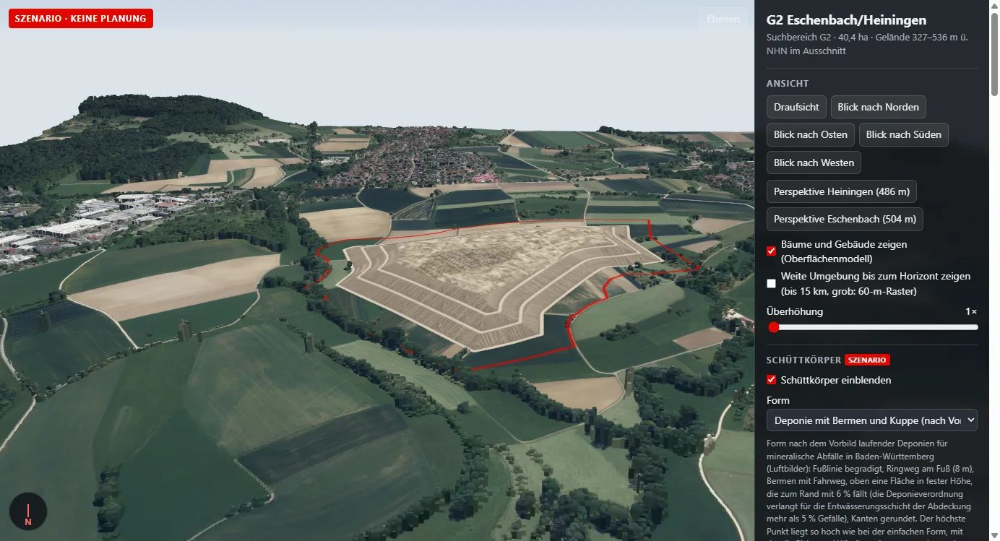
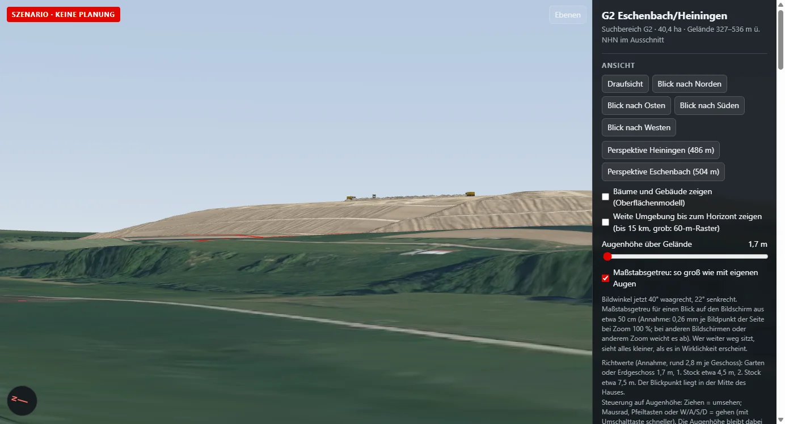

geoanalysis-viewer: G2 in 3D
How would a landfill heap in the search area G2 (Eschenbach and Heiningen, Landkreis Göppingen) look from where people live? This viewer shows the site in 3D from public geodata: terrain, aerial image, buildings and trees, and an assumed heap whose size follows stated assumptions.
Open the 3D viewer
About 5.4 MB, best in a desktop browser. The viewer's text is in German.
Or download the page and open it from disk: it works offline and makes no network requests.
Or download the page and open it from disk: it works offline and makes no network requests.
This demo leaves out the LUBW layers (protected areas, biotopes, water layers), because their terms for redistribution were not checked. A local export includes them.


What is real and what is assumed
- Real data: terrain (DGM1), aerial image (DOP20, down to 0.2 m), surface heights, tree positions and heights, residential areas, viewpoints at the nearest houses. The viewer names each source and its retrieval date under "Quellen".
- Assumed: the heap. Its footprint, slope and height come from a scenario file in which every value is sourced or marked as an assumption. Its surface detail is labelled as illustration, partly from AI-generated images.
- Nothing invented where something real exists: the aerial image is not upscaled, and no houses or trees are made up.
Start with an AI coding agent
The repository is written to be picked up by coding agents (Claude Code, Codex and others): AGENTS.md holds the invariants, where to change what, and the checks. A prompt to start with, adapted to your goal:
Clone https://github.com/danielreinhardger/geoanalysis-viewer and read AGENTS.md, CLAUDE.md and docs/DESIGN.md before you change anything. Goal: <what you want, e.g. "build the 3D page for G2 on my computer" or "export the viewer for my site, outline in sites/mysite.geojson">. Rules: - Keep the invariants in AGENTS.md: nothing invented where something real exists, the heap is a scenario, every dataset keeps its source and retrieval date. - Ask me before installing packages or downloading large files (an LGL height tile is about 12 MB per 2 km block). - If the code and AGENTS.md disagree, trust the code and tell me. When you are done, run the checks under "Verify" in AGENTS.md, show me their output, and say which checks you could not run.
Read more
Design notes for people
docs/DESIGN.md: why the viewer is built this way, what each decision costs, what is still open. With diagrams.
Notes for coding agents
AGENTS.md: invariants, module map, where to change what, how the export degrades, traps, checks.
How the view is made
docs/RENDERING.md: data sources, light, true scale, the single file, measured figures.
Source code
The repository on GitHub: build the viewer for G2 or another site in Baden-Württemberg. GPL-3.0.